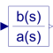
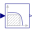

TransferFunctionLinear transfer function |

|
Information
This information is part of the Modelica Standard Library maintained by the Modelica Association.
This block defines the transfer function between the input u and the output y as (nb = dimension of b, na = dimension of a):
b[1]*s^[nb-1] + b[2]*s^[nb-2] + ... + b[nb]
y(s) = --------------------------------------------- * u(s)
a[1]*s^[na-1] + a[2]*s^[na-2] + ... + a[na]
State variables x are defined according to controller canonical form. Internally, vector x is scaled to improve the numerics (the states in versions before version 3.0 of the Modelica Standard Library have been not scaled). This scaling is not visible from the outside of this block because the non-scaled vector x is provided as output signal and the start value is with respect to the non-scaled vector x. Initial values of the states x can be set via parameter x_start.
Example:
TransferFunction g(b = {2,4}, a = {1,3});
results in the following transfer function:
2*s + 4
y = --------- * u
s + 3
Parameters (5)
| b |
Value: {1} Type: Real[:] Description: Numerator coefficients of transfer function (e.g., 2*s+3 is specified as {2,3}) |
|---|---|
| a |
Value: {1} Type: Real[:] Description: Denominator coefficients of transfer function (e.g., 5*s+6 is specified as {5,6}) |
| initType |
Value: Modelica.Blocks.Types.Init.NoInit Type: Init Description: Type of initialization (1: no init, 2: steady state, 3: initial state, 4: initial output) |
| x_start |
Value: zeros(nx) Type: Real[size(a, 1) - 1] Description: Initial or guess values of states |
| y_start |
Value: 0 Type: Real Description: Initial value of output (derivatives of y are zero up to nx-1-th derivative) |
Outputs (1)
| x |
Type: Real[size(a, 1) - 1] Description: State of transfer function from controller canonical form |
|---|
Connectors (2)
| u |
Type: RealInput Description: Connector of Real input signal |
|
|---|---|---|
| y |
Type: RealOutput Description: Connector of Real output signal |
Used in Examples (1)
|
Modelica.Blocks.Examples.Noise Demonstrates how to model wind turbulence for aircraft with the BandLimitedWhiteNoise block (a simple model of vertical Dryden gust speed at low altitudes < 1000 ft) |
Used in Components (1)
|  |
Modelica.Electrical.PowerConverters.ACDC.Control PT1 + all-pass filter |